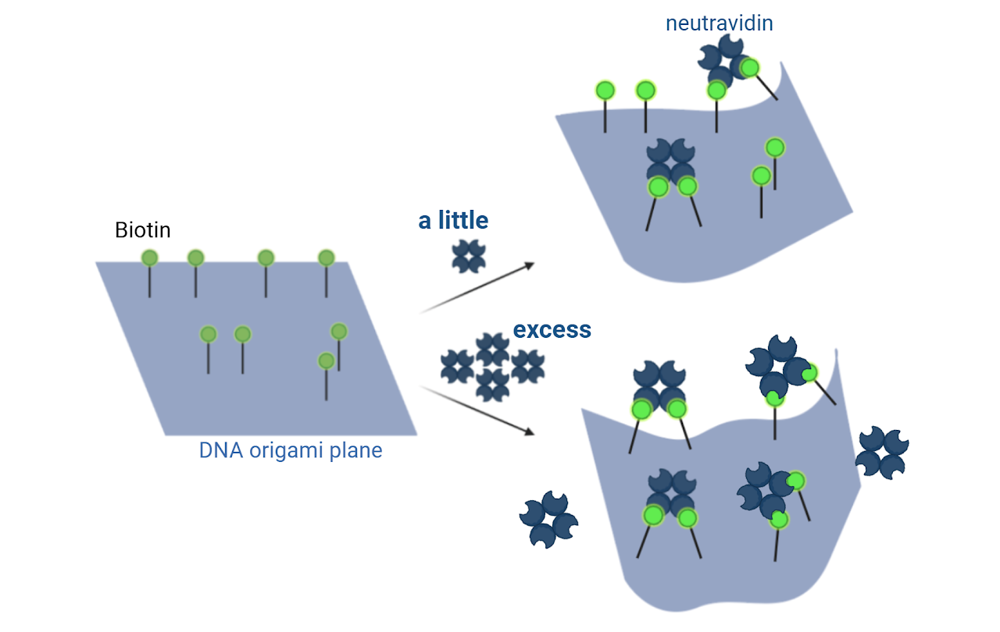
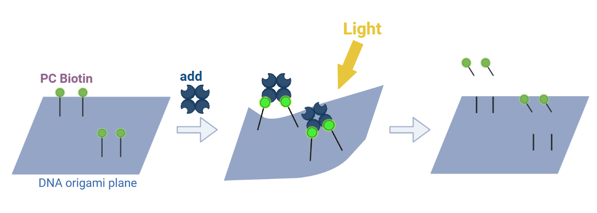
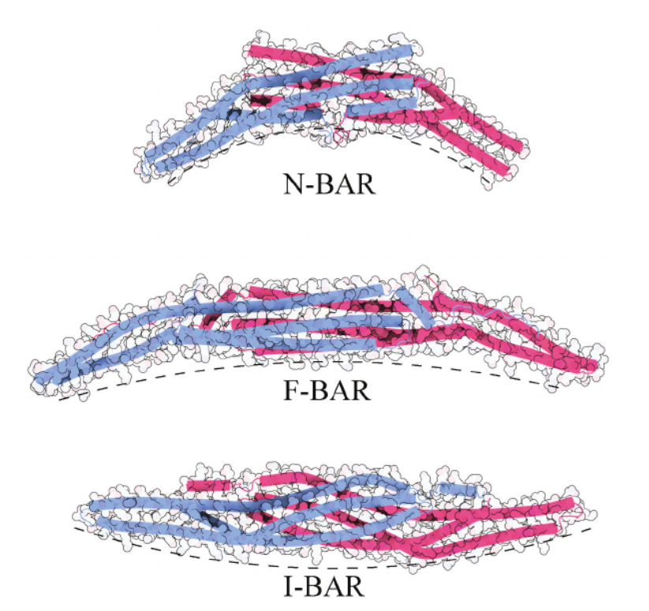
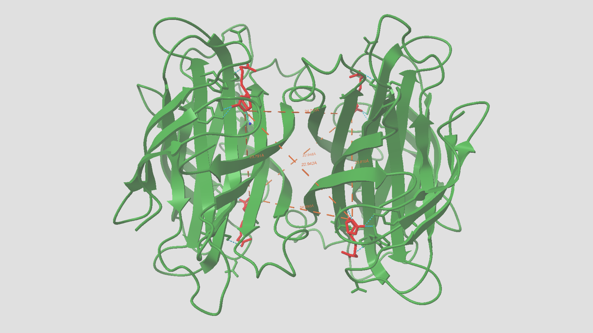

1.Application to the Plane
In this project, we demonstrated that dsDNA can bend due to the avidin-biotin binding force.
By biotin-modifying multiple thymine bases within a DNA origami plane, it is possible to reproduce multiple instances of this curved dsDNA structure on the DNA origami plane. Combining the two variables of biotin-to-biotin distance and linker length enables precise design of curved DNA origami. In addition to that, in this design, a single biotin-modified DNA origami plane can adopt multiple curved structures by varying the avidin concentration(Fig1).This is because changes in avidin concentration alter the proportion of biotin that binds to avidin and adopts a curved structure.Therefore,Adjusting avidin concentration allows control over changes in the 3D DNA structure.
Furthermore, it is possible to release the curved structure using photo-cleavable Biotin(PC Biotin)(Fig2) with an added light-cutting spacer or DestihoBiotin, which binds less strongly to avidin than biotin. As described above, precise and dynamic curved surface control is achievable.
2.Practical Use
Focusing on the dynamic properties of our proposed curved structure, which can be adjusted by avidin concentration, and its structural release via a specific biotin, we anticipate its potential application as an ‘artificial BAR domain’. BAR domains are protein domains that form crescent-shaped dimers(Fig3). They are pressed against lipid membranes and function to physically assist in forming membrane curvature[1]. In other words, they serve as scaffolds for cell membrane formation. Our DNA bend structure possesses sufficient rigidity as a scaffold and has the potential to reproduce the dynamic deformation of biological membranes, making it suitable for mimicking BAR domain function. Realizing an artificial system closer to the biological environment could yield new insights into the behavior of biological membranes.
 The DNA curved structure we propose exhibits tolerance to environmental changes such as temperature and ion concentration. This property makes it suitable for application in drug delivery systems navigating diverse environments within living organisms. It can serve as a tool providing stable structures when utilizing complex-shaped DNA origami as a DDS. Furthermore, designing the curvature of DNA origami to conform to the shape of biological membranes enhances uptake efficiency into target cells (facilitating endocytosis induction). Additionally, unused biotin-binding sites on avidin can be utilized as loading sites for drugs conjugated to biotin. As a nanoscale curved surface with potent drug-loading capacity, it holds promise for medical applications.